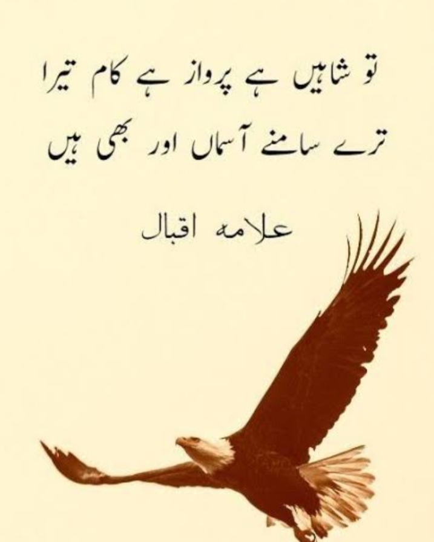

Visual arts encompass a wide range of creative expressions that are primarily visual in nature, including painting, drawing, sculpture, photography, and more contemporary forms like digital art and installations. These art forms allow individuals to communicate ideas, emotions, and worldviews through visual mediums, often transcending language and cultural barriers. Visual arts play a crucial role in society by reflecting cultural values, challenging perspectives, and inspiring innovation and dialogue. Whether traditional or modern, visual art continues to evolve, pushing boundaries and expanding the way we experience and interpret the world around us.
- Painting
- Sculpture
- Drawing
- Photography
- Digital Art
MY ACRYLIC PAINTING

Performing arts
Performing arts encompass a wide range of artistic expressions where artists use their voices, bodies, or objects to convey meaning and emotion through live performance. This vibrant field includes disciplines such as theatre, dance, music, and opera, each bringing unique techniques and traditions to the stage. Performing arts not only entertain but also challenge perspectives, reflect cultural identities, and foster human connection. From grand concert halls to intimate street performances, this form of art continues to inspire audiences, provoke thought, and celebrate the richness of human creativity.
- Music
- Dance
- Cinema
Literary arts encompass the creative expression of ideas, emotions, and stories through the written and spoken word. This art form includes poetry, prose, drama, and other narrative techniques that allow writers to explore the human experience, question societal norms, and ignite the imagination of readers. Whether through a novel's complex characters or a poem's rhythmic flow, literary arts serve as a powerful vehicle for communication, reflection, and cultural preservation. They bridge generations and geographies, fostering empathy and understanding across diverse perspectives.
- Poetry 
- Fiction
Fiction literary art refers to storytelling that is created from the imagination rather than based strictly on fact. It includes written works such as: - **Novels** - **Short stories** - **Novellas** - **Flash fiction** These works can explore a wide range of genres—like romance, science fiction, fantasy, mystery, historical fiction, and more. What makes it *art* is the way authors use language, structure, characters, and themes to provoke thought, evoke emotion, and offer insight into the human experience. It’s called "literary" when the focus is more on style, depth, and meaning than on just entertainment—think of authors like Virginia Woolf, James Joyce, or Toni Morrison.
- Non-fiction
**Non-fiction literary arts** refers to a type of writing that is based on real events, people, and facts, but is crafted with the stylistic and narrative techniques usually found in fiction or poetry. It blends factual accuracy with literary style, making the work both informative and artistically engaging.